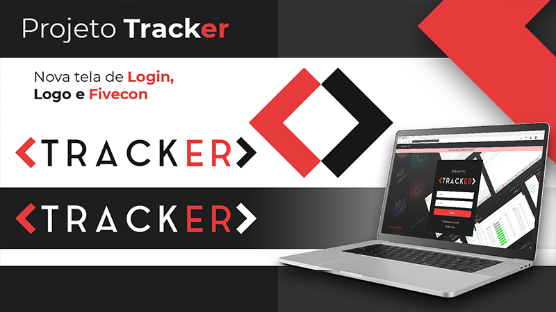
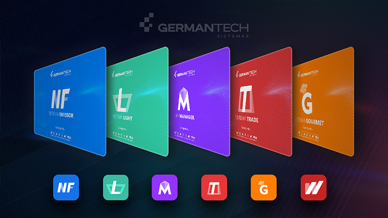

During my tenure at German Tech Systems, I redesigned the interfaces of systems such as Emissor,
Light, Manager, Trade, Gourmet, the company's website, and the login screens of the internal
Tracker and ECF Web systems. My role involved the visual identity relayout for the systems,
creating splashes, login screens, and customized icons, along with defining cohesive color
schemes and layouts.